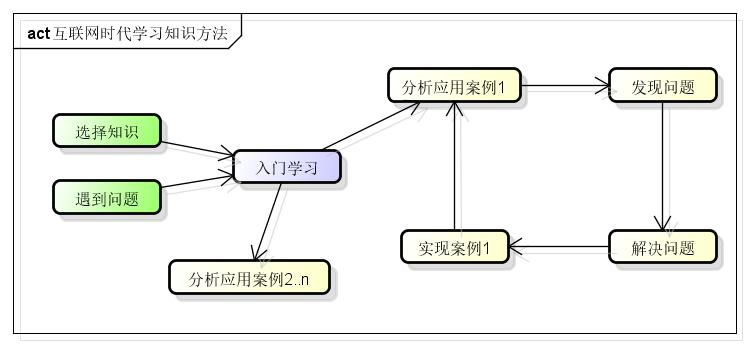

理论基础。
非常重要；
应该从书上获取，在笔记中不应收集；
技术入门使用。
技术入门使用方面知识不应收集到笔记中；
最好以代码形式放入Github中，如learning库；
技术架构解决方案。
多种技术的组合使用，如：kafka+spark streaming实时数据处理；
行业典型解决方案；
专题总结，总结成熟的技术方案，如：报表；
技术架构解决方案可以收集到笔记中，能代码实现的方案，一定需要代码实现，放入Github中；
产品。
总结： - 笔记中以收集【 技术架构解决方案】为主，清理其他内容； - 【技术入门使用】知放入Github的learning库中 - 空余学习性编程主要是三个方面：技术入门使用、技术架构解决方案、产品； - 日常工作中，应该是工作任务+（理论基础 | 学习性编程）；
原则
缩小关注圈，扩大影响圈。自己完全搞不懂的知识不要花时间、收藏，努力加深已知知识深度，扩大自己已知知识的外延（广度）。
知识结构化。用思维导图来组织自己的所有知识。
721原则。70%时间和精力花在练习上，20%花在思考与讨论上，10%花在碎片化信息浏览上。
互联网时代学习知识方法
